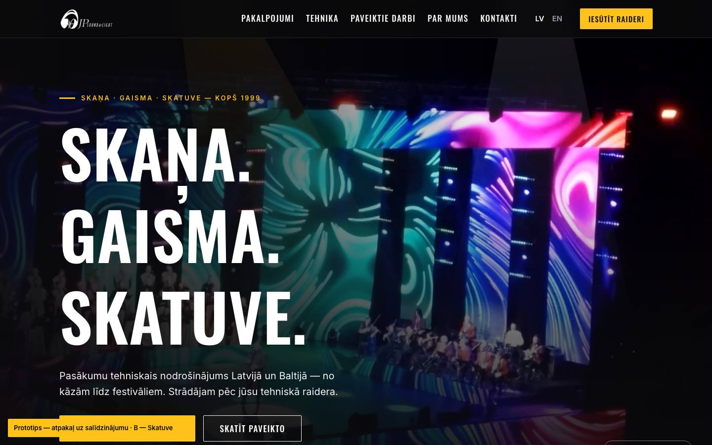
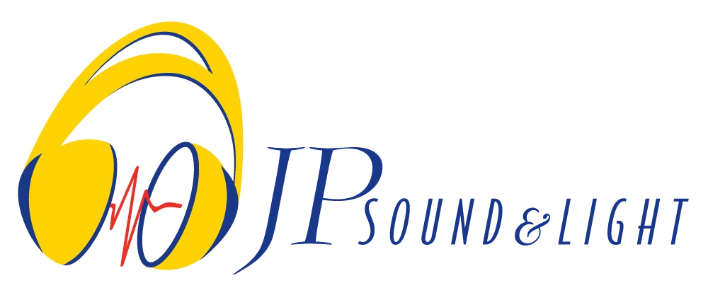
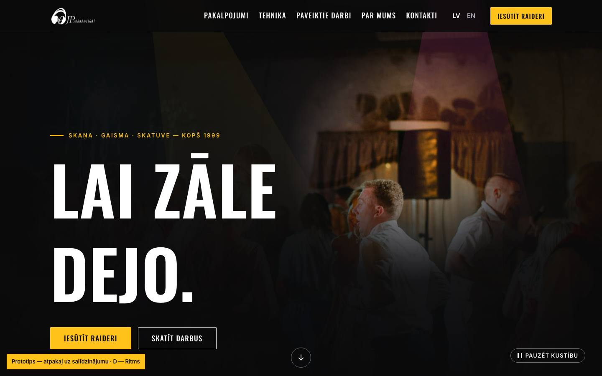
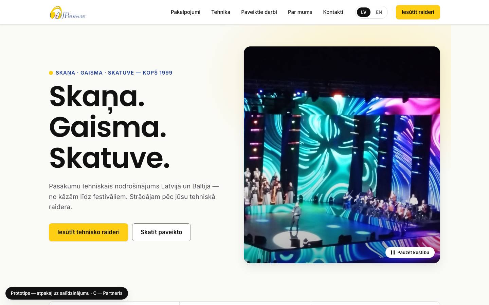

Jaunā jpsound.lv — dizaina virzieni


Logo piedāvājums
Skatuve — dzīvs
AnimētsEkvalaizera stabiņi lēkā katrs savā ritmā — kā īsts skaņas ekvalaizers.
statiskā — ikonai un drukai
Pakalpojumi Tehnika Darbi KontaktiIesūtīt raideri
Ritms — dzīvs
AnimētsGaišs impulss skrien pa pulsa līniju cauri austiņām — kā signāls kabelī.
statiskā — ikonai un drukai
Pakalpojumi Tehnika Darbi KontaktiIesūtīt raideri
Darba piemēri, nevis publiska lapa. Formas piemēros datus nesūta; saite „EN” vēl nedarbojas. Ar [paraugs] atzīmētās vietas aizpildās vēlāk.